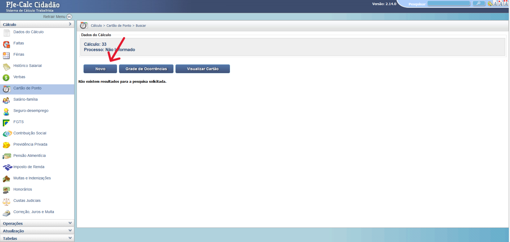
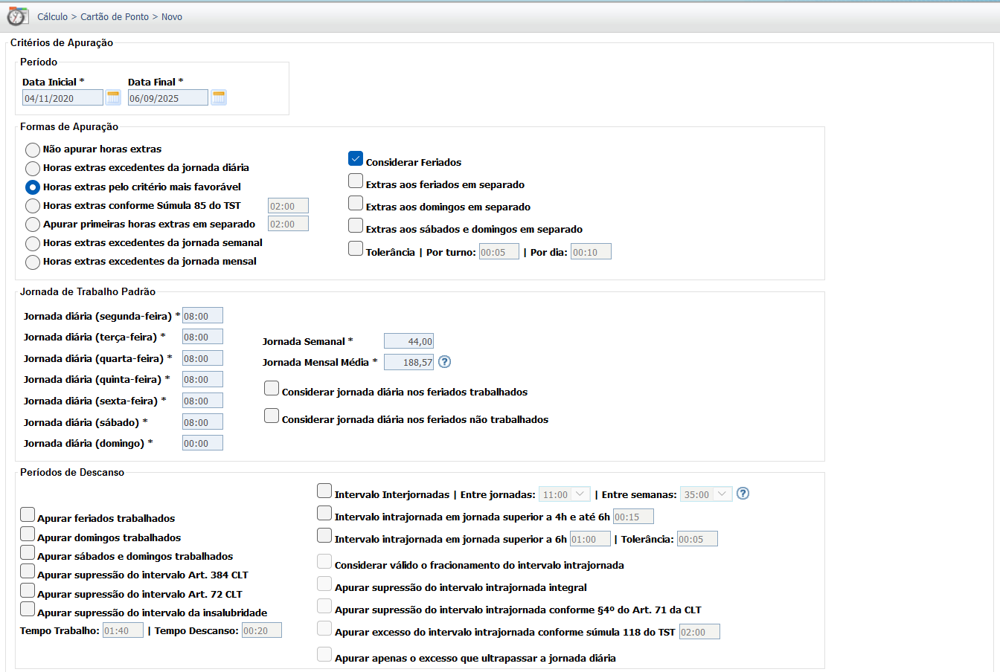
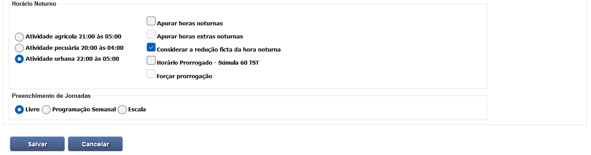
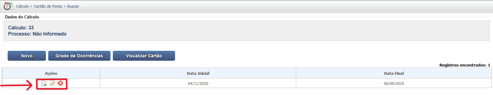
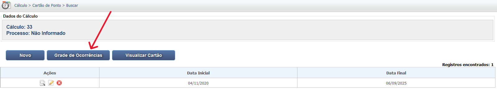
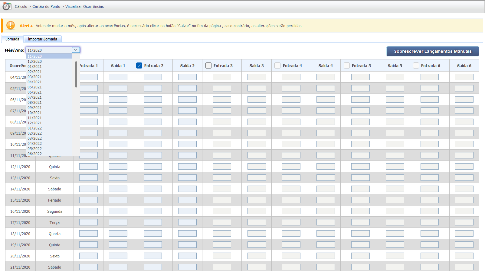

Manual Interativo de Cálculos Trabalhistas
Um guia completo e interativo para entender os cálculos na esfera judicial trabalhista.
Lançamento do Cartão de Ponto
A tela de Cartão de Ponto permite o lançamento ou a importação da jornada de trabalho para fins de apuração de horas extras, horas noturnas e intervalos.
As imagens abaixo demonstram o lançamento ou a importação da jornada de trabalho.
Geração do Cartão de Ponto
Parametrizações do Cartão de Ponto


Visualização/Alteração e Exclusão do Cartão de Ponto
Lançamento de Ocorrências
6. Formulário de Jornada Padrão
7. Importação de Arquivo de Ponto (CSV)